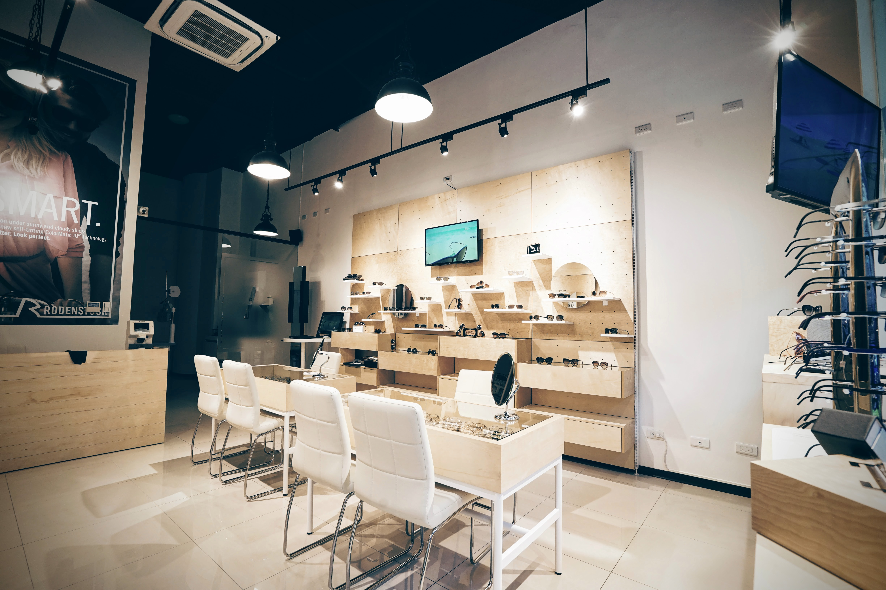

展示掛勾 · 客製展架 · 店面陳列系統

展示參考
先看場景，
再談怎麼做。
不同商品，需要不同的展示方式。從下列影像認識陳列方向，再帶著你的空間、商品與預算，討論適合製造的形式。
影像作為展示方向參考；實際製作範圍、材料與規格，需依各案圖面及需求確認。
合作方式
從需求開始，
逐步確認細節。
- 01說明使用情境
告訴我們商品、陳列位置、希望呈現的方式與預估數量。
- 02一起確認製作條件
依現場尺寸、材料、安裝與預算，討論可行的結構與做法。
- 03再決定打樣與製造
依確認後的規格與時程，安排下一階段的製作討論。
開始討論
你的展示需求，
可以從一張圖開始。
提供商品、尺寸、數量與希望完成的時間。若有草圖、現場照片或圖面，可附上可瀏覽的連結。